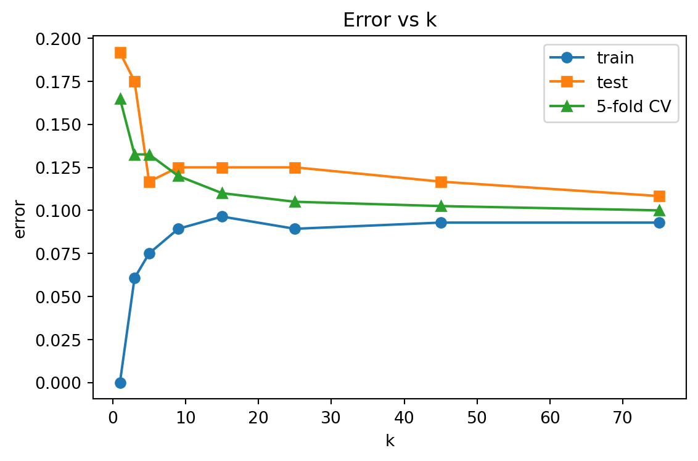
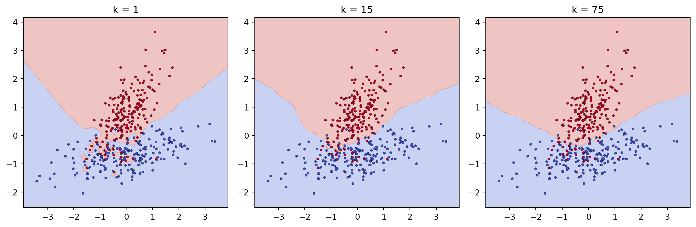

flowchart TD
Q[Query point x] --> C[Compute dist x to every x_i]
C --> S[Select k smallest distances -> N_k]
S --> T{Task?}
T -->|Classification| V[Majority or weighted vote over labels in N_k]
T -->|Regression| M[Mean or weighted mean of responses in N_k]
V --> P[Prediction y-hat]
M --> P
99 K-Nearest Neighbors
K-Nearest Neighbors (KNN) is among the simplest learning algorithms to state and among the most instructive to study. It makes no parametric assumption about the shape of the decision boundary, it stores the training data rather than compressing it into weights, and it produces predictions by appealing directly to the most similar examples it has seen. This combination of conceptual transparency and surprising effectiveness has kept KNN relevant from its formal analysis in the 1960s through to modern retrieval-augmented systems, where finding nearest neighbors in a learned embedding space is a core operation. This chapter develops the algorithm rigorously, examines the decisions that determine whether it succeeds or fails, and surveys the data structures that make it tractable at scale.
99.1 1. The Algorithm
99.1.1 1.1 Classification and regression
Let the training set be \(\mathcal{D} = \{(\mathbf{x}_i, y_i)\}_{i=1}^{n}\) with feature vectors \(\mathbf{x}_i \in \mathbb{R}^d\) and labels \(y_i\). KNN is a lazy, instance based method: there is no training phase that fits parameters. To predict for a query point \(\mathbf{x}\), we identify the set \(N_k(\mathbf{x})\) of the \(k\) training points closest to \(\mathbf{x}\) under a chosen distance metric.
For classification, the prediction is a majority vote among those neighbors:
\[ \hat{y}(\mathbf{x}) = \arg\max_{c} \sum_{i \in N_k(\mathbf{x})} \mathbb{1}[y_i = c]. \]
For regression, the prediction is the mean of the neighbor responses:
\[ \hat{y}(\mathbf{x}) = \frac{1}{k} \sum_{i \in N_k(\mathbf{x})} y_i. \]
The method is nonparametric in the strict sense: the effective number of parameters grows with the data. The entire training set is the model.
99.1.2 1.2 A statistical view
KNN estimates the conditional distribution \(p(y \mid \mathbf{x})\) locally. In a region small enough that \(p(y \mid \mathbf{x})\) is approximately constant, the labels of nearby points are roughly an independent sample from that conditional, so their average estimates it. This framing explains the two competing pressures on \(k\). A small neighborhood keeps the constant conditional assumption valid (low bias) but averages over few points (high variance). A large neighborhood averages over many points (low variance) but reaches into regions where the conditional has drifted (high bias). The bias variance tradeoff is therefore controlled almost entirely by \(k\).
99.1.3 1.3 The asymptotic error bound
A classical result anchors the method. Cover and Hart (1967) proved that as \(n \to \infty\), the error rate \(R_{1\text{NN}}\) of the 1-nearest-neighbor classifier is bounded above by twice the Bayes error rate \(R^*\):
\[ R^* \le R_{1\text{NN}} \le R^*\left(2 - \frac{M}{M-1}R^*\right) \le 2 R^*, \]
where \(M\) is the number of classes. In words, the single nearest neighbor, with no training and no tuning, asymptotically achieves an error at most twice the best any classifier could possibly do. This is a remarkable guarantee for so naive a rule and explains why KNN is a serious baseline rather than a toy.
The intuition behind the lower factor is short. As \(n \to \infty\), the nearest neighbor \(\mathbf{x}_{(1)}\) of a query \(\mathbf{x}\) converges to \(\mathbf{x}\), so its label is drawn from \(p(y \mid \mathbf{x})\), the same conditional that governs the query. Write \(\eta_c(\mathbf{x}) = p(y = c \mid \mathbf{x})\). The probability that query and neighbor agree on class \(c\) is \(\eta_c^2\), so the asymptotic probability of a disagreement (the 1NN error) is
\[ R_{1\text{NN}} = \mathbb{E}_{\mathbf{x}}\left[ 1 - \sum_{c=1}^{M} \eta_c(\mathbf{x})^2 \right]. \]
The Bayes error is \(R^* = \mathbb{E}_{\mathbf{x}}[1 - \max_c \eta_c(\mathbf{x})]\). For the two-class case, write \(\eta = \max_c \eta_c\), so the local Bayes error is \(1 - \eta\) and the local 1NN error is \(1 - \eta^2 - (1-\eta)^2 = 2\eta(1-\eta)\). Since \(\eta \ge \tfrac{1}{2}\) we have \(2\eta(1-\eta) \le 2(1-\eta)\) pointwise, and taking expectations gives \(R_{1\text{NN}} \le 2 R^*\). The general \(M\)-class bound follows from a Jensen argument applied to the same per-point inequality. The code in Section 8 verifies this bound empirically.
99.1.4 1.4 A worked example
Take a query \(\mathbf{x} = (0, 0)\) and five labeled training points in \(\mathbb{R}^2\) under Euclidean distance:
\[ \begin{array}{c|c|c} \mathbf{x}_i & y_i & d_2(\mathbf{x}, \mathbf{x}_i) \\ \hline (1, 0) & A & 1.00 \\ (0, 1) & A & 1.00 \\ (1.5, 1) & B & 1.80 \\ (-2, 0) & B & 2.00 \\ (2, 2) & A & 2.83 \end{array} \]
With \(k = 3\) the nearest neighbors are \((1,0)\), \((0,1)\), and \((1.5,1)\) with labels \(A, A, B\). Uniform voting gives two votes for \(A\) and one for \(B\), so \(\hat{y} = A\). Inverse-distance weighting gives \(A\) a score of \(\tfrac{1}{1.00} + \tfrac{1}{1.00} = 2.00\) and \(B\) a score of \(\tfrac{1}{1.80} = 0.56\), reinforcing the same decision but now with a confidence margin that reflects proximity. With \(k = 1\) the tie between the two unit-distance \(A\) points is resolved either way to \(A\), so here the prediction is stable across \(k\); in noisier configurations it would not be, which is exactly what the bias variance analysis of Section 3 quantifies.
99.1.5 1.5 Pseudocode
predict(x, D, k, dist):
compute dist(x, x_i) for all i
select indices of k smallest distances -> N
classification: return mode of {y_i : i in N}
regression: return mean of {y_i : i in N}99.2 2. Distance Metrics
The notion of “nearest” is only as meaningful as the metric that defines it. The choice of distance is the most consequential modeling decision in KNN, more so than the choice of \(k\).
99.2.1 2.1 The Minkowski family
The workhorse metrics belong to the Minkowski family, parameterized by \(p \ge 1\):
\[ d_p(\mathbf{x}, \mathbf{z}) = \left( \sum_{j=1}^{d} |x_j - z_j|^p \right)^{1/p}. \]
Setting \(p = 2\) gives Euclidean distance, the default for continuous features in roughly isotropic spaces. Setting \(p = 1\) gives Manhattan (city block) distance, which is more robust to outliers in individual coordinates because it does not square deviations. As \(p \to \infty\) the metric approaches the Chebyshev distance \(\max_j |x_j - z_j|\), dominated by the single largest coordinate difference.
99.2.2 2.2 Beyond Minkowski
For high dimensional, sparse, or directional data, other metrics often serve better. Cosine distance, \(1 - \frac{\mathbf{x} \cdot \mathbf{z}}{\|\mathbf{x}\|\,\|\mathbf{z}\|}\), ignores magnitude and compares orientation; it dominates text and embedding applications where vector length is uninformative. The Mahalanobis distance,
\[ d_M(\mathbf{x}, \mathbf{z}) = \sqrt{(\mathbf{x} - \mathbf{z})^\top \Sigma^{-1} (\mathbf{x} - \mathbf{z})}, \]
accounts for feature correlations and scale by whitening the space through the inverse covariance \(\Sigma^{-1}\). For categorical features, the Hamming distance counts mismatched components, and for mixed data the Gower distance combines per-feature dissimilarities. Metric learning methods such as Large Margin Nearest Neighbor learn \(\Sigma\) (or an equivalent linear transformation) from labeled data so that same-class points are pulled together and different-class points are pushed apart.
99.2.3 2.3 Feature scaling is mandatory
Because Minkowski distances sum contributions across coordinates, a feature measured on a large numeric scale will dominate the distance regardless of its predictive relevance. A dataset with income in dollars (ranging to \(10^5\)) and age in years (ranging to \(10^2\)) will produce neighborhoods determined almost entirely by income. Standardization to zero mean and unit variance, or min max scaling to a fixed interval, is therefore not optional preprocessing but a precondition for the algorithm to behave sensibly. This sensitivity to scale is one of the most common reasons a KNN baseline underperforms in practice.
99.3 3. Choosing k
99.3.1 3.1 The effect of k on the decision boundary
The parameter \(k\) controls the smoothness of the fitted function. At \(k = 1\) every training point sits in its own cell of a Voronoi tessellation, the training error is zero, and the decision boundary is jagged and noise sensitive. As \(k\) grows the boundary smooths, individual mislabeled points lose their influence, and at the extreme \(k = n\) the prediction collapses to the global majority class (or global mean), ignoring \(\mathbf{x}\) entirely. Small \(k\) overfits; large \(k\) underfits.
99.3.2 3.2 Selection in practice
The standard approach is cross validation: evaluate a grid of candidate values and select the \(k\) minimizing validation error. Several rules of thumb sharpen the search. A common starting point is \(k \approx \sqrt{n}\). For binary classification, choosing an odd \(k\) avoids tie votes. When ties do occur, they are typically broken by reducing \(k\) by one, by distance weighting, or by a deterministic class ordering. Importantly, the optimal \(k\) interacts with the metric, the weighting scheme, and the dimensionality, so it should be tuned jointly with those choices rather than fixed in advance.
best_k, best_err = None, inf
for k in [1, 3, 5, ..., sqrt(n)]:
err = cross_val_error(model(k), folds)
if err < best_err: best_k, best_err = k, err99.4 4. The Curse of Dimensionality
99.4.1 4.1 Distances concentrate
KNN rests on the premise that nearby points are similar. In high dimensions this premise quietly fails. As \(d\) grows, the volume of space expands exponentially, and any fixed sample becomes sparse: the data no longer fills the space densely enough for “local” neighborhoods to be local. More damagingly, pairwise distances concentrate. Under broad conditions the ratio of the farthest to the nearest distance from a query approaches one:
\[ \lim_{d \to \infty} \mathbb{E}\left[\frac{\text{dist}_{\max} - \text{dist}_{\min}}{\text{dist}_{\min}}\right] \to 0. \]
When the nearest and farthest points are nearly equidistant, the concept of a nearest neighbor loses its discriminative meaning, and the votes that KNN relies on become noise.
A short derivation makes the mechanism concrete. Let the coordinates \(X_1, \dots, X_d\) of a point be independent and identically distributed with mean \(\mu\) and variance \(\sigma^2\), and consider the squared Euclidean distance from the origin,
\[ D^2 = \sum_{j=1}^{d} X_j^2. \]
By linearity, \(\mathbb{E}[D^2] = d \,\mathbb{E}[X_1^2]\), which grows linearly in \(d\), so the typical distance scales like \(\sqrt{d}\). The variance of \(D^2\) is \(\operatorname{Var}(D^2) = d \,\operatorname{Var}(X_1^2)\), also linear in \(d\). Now compare the spread of distances to their magnitude through the coefficient of variation:
\[ \frac{\operatorname{sd}(D)}{\mathbb{E}[D]} \;\approx\; \frac{1}{2}\,\frac{\operatorname{sd}(D^2)}{\mathbb{E}[D^2]} \;=\; \frac{1}{2}\,\frac{\sqrt{d\,\operatorname{Var}(X_1^2)}}{d\,\mathbb{E}[X_1^2]} \;=\; \frac{1}{2}\,\frac{\sqrt{\operatorname{Var}(X_1^2)}}{\sqrt{d}\,\mathbb{E}[X_1^2]} \;=\; O\!\left(\frac{1}{\sqrt{d}}\right), \]
where the first step is the delta-method approximation \(\operatorname{sd}(D) \approx \operatorname{sd}(D^2) / (2\,\mathbb{E}[D])\). The relative spread of distances therefore shrinks like \(1/\sqrt{d}\): as dimension grows, every point sits at almost the same distance, the contrast between near and far collapses, and “nearest” becomes arbitrary. Beyer and colleagues (1999) made this precise, showing that under mild conditions \(\operatorname{dist}_{\min}/\operatorname{dist}_{\max} \to 1\) in probability. The demonstration in Section 8 measures this \(1/\sqrt{d}\) decay directly.
99.4.2 4.2 Consequences and remedies
To maintain a fixed density of neighbors, the required sample size grows exponentially in \(d\), which is infeasible for even moderate dimensionality. The practical response is to reduce the effective dimension before applying KNN. Feature selection discards irrelevant coordinates, which matters because in Minkowski metrics every irrelevant feature adds noise to the distance. Dimensionality reduction through principal component analysis, or nonlinear manifold methods, projects the data onto a lower dimensional subspace where neighborhoods remain meaningful. Learned embeddings from neural networks serve the same purpose: they map raw inputs into a space, typically of a few hundred dimensions, engineered so that Euclidean or cosine proximity tracks semantic similarity. Modern KNN at scale almost always operates in such a space rather than on raw features.
99.5 5. Weighting
99.5.1 5.1 Distance weighted voting
Uniform voting treats the closest neighbor and the \(k\)-th closest identically, which discards information about relative proximity. Distance weighting corrects this by letting each neighbor’s influence decay with distance. A common scheme weights by the inverse distance, \(w_i = 1 / d(\mathbf{x}, \mathbf{x}_i)\), and the weighted classification rule becomes
\[ \hat{y}(\mathbf{x}) = \arg\max_{c} \sum_{i \in N_k(\mathbf{x})} w_i \, \mathbb{1}[y_i = c], \]
with the analogous weighted average for regression. A Gaussian (radial basis) kernel, \(w_i = \exp(-d(\mathbf{x}, \mathbf{x}_i)^2 / 2\sigma^2)\), gives a smoother decay governed by a bandwidth \(\sigma\). Weighting makes predictions less sensitive to the exact value of \(k\), since distant neighbors contribute little; in the limit it connects KNN to kernel regression, where every training point contributes with a weight that vanishes with distance.
99.5.2 5.2 Handling imbalance
In imbalanced datasets a majority class can swamp the vote in any neighborhood simply by being numerous. Distance weighting partially mitigates this, but additional measures help: weighting votes by inverse class frequency, resampling the training data, or calibrating the decision threshold on the resulting score rather than taking a raw majority.
99.6 6. Efficient Search
99.6.1 6.1 The cost of brute force
A naive query computes the distance to all \(n\) training points and partially sorts them, costing \(O(nd)\) per query. For a large reference set this is prohibitive, especially because KNN defers all work to query time. The remedy is to preprocess the training data into a spatial index that prunes most candidates without examining them.
99.6.2 6.2 KD-trees
A KD-tree recursively partitions \(\mathbb{R}^d\) with axis aligned hyperplanes, splitting at the median of one coordinate at each level and cycling or choosing the highest variance axis. A nearest neighbor query descends to the leaf containing the query, then backtracks, using the distance to each splitting plane to decide whether the other side of a split could contain a closer point. If the plane is farther than the current best neighbor, that whole branch is pruned. In low dimensions this yields roughly \(O(\log n)\) queries. The structure degrades as \(d\) rises, however: the number of branches that must be examined grows until, for \(d\) beyond roughly 20, the tree visits nearly every point and offers little advantage over brute force. This degradation is itself a manifestation of the curse of dimensionality.
99.6.3 6.3 Ball trees
Ball trees address the weakness of axis aligned splits by partitioning the data into nested hyperspheres rather than rectangular cells. Each node stores a centroid and a radius bounding all the points it contains. During a query, the triangle inequality bounds the minimum possible distance from the query to any point in a ball, \(d(\mathbf{x}, \text{centroid}) - \text{radius}\), and if this lower bound exceeds the current best, the entire ball is pruned. Because spheres adapt to the data distribution better than boxes, ball trees typically outperform KD-trees on higher dimensional and clustered data, though they too eventually succumb to dimensionality.
99.6.4 6.4 Approximate nearest neighbors
When exact search is infeasible, approximate nearest neighbor (ANN) methods trade a small, controllable loss in accuracy for orders of magnitude in speed. Two families dominate practice.
Locality sensitive hashing uses hash functions designed so that nearby points collide with high probability and distant points rarely do. Points sharing a hash bucket become candidates, and only those candidates are scored exactly. Multiple hash tables raise the probability of finding the true neighbor.
Graph based methods, of which Hierarchical Navigable Small World (HNSW) is the leading example, build a multilayer proximity graph in which each point links to its near neighbors. A query enters at a sparse top layer for coarse, long range navigation and descends through denser layers, greedily walking toward the query at each step. HNSW achieves high recall with logarithmic-like query time and underlies most production vector databases. Another widely used approach, inverted file indexes combined with product quantization (IVF-PQ), clusters the data and compresses vectors into compact codes, enabling billion-scale search within bounded memory. These ANN methods are what make embedding based retrieval, recommendation, and semantic search practical at web scale.
99.6.5 6.5 Choosing an index
The decision follows the dimensionality and the accuracy requirement. For low dimensional data with an exact requirement, KD-trees or ball trees are appropriate. For high dimensional data, exact indexes lose their advantage and brute force or ANN become the realistic options. When the reference set is large and approximate results are acceptable, HNSW or IVF-PQ are the standard choices, tuned to balance recall, latency, and memory.
flowchart TD
A[Choose a search index] --> B{Exact result required?}
B -->|Yes| C{Dimension low, roughly under 20?}
C -->|Yes| D[KD-tree or ball tree]
C -->|No| E[Brute force O of n d]
B -->|No| F{Reference set very large?}
F -->|Yes| G[HNSW or IVF-PQ]
F -->|No| H[LSH or brute force]
99.7 7. Practical Considerations
KNN carries no training cost but a heavy prediction cost in both time and memory, since the full dataset must be retained and searched. It is sensitive to irrelevant features, to unscaled features, and to noise, all of which corrupt the distance. It requires a strategy for missing values, since most metrics are undefined on incomplete vectors; common choices are imputation before indexing or metrics that skip absent coordinates. Despite these costs, KNN remains valuable as a strong, assumption free baseline, as a building block in recommendation and anomaly detection, and as the retrieval engine behind modern semantic search and retrieval-augmented generation. Its enduring lesson is that a well chosen representation and a sensible notion of distance can carry a great deal of predictive weight with almost no model at all.
99.8 8. KNN in Practice: A Worked Computation
The following cell fits KNN classifiers across a grid of \(k\), plots how the decision boundary smooths and how train, test, and cross validation error trade off, demonstrates distance concentration across dimensions, checks the Cover and Hart bound empirically, and confirms the two-class local error identity symbolically with SymPy. A fixed seed makes every number reproducible.
Code
import numpy as np
import pandas as pd
import sympy as sp
import matplotlib.pyplot as plt
from scipy.stats import norm
from sklearn.datasets import make_classification
from sklearn.model_selection import cross_val_score, train_test_split
from sklearn.neighbors import KNeighborsClassifier
from sklearn.preprocessing import StandardScaler
rng = np.random.default_rng(0)
# --- A 2D dataset, standardized (scaling is mandatory for KNN) ---
X, y = make_classification(
n_samples=400, n_features=2, n_redundant=0, n_informative=2,
n_clusters_per_class=1, class_sep=1.1, random_state=0,
)
X = StandardScaler().fit_transform(X)
Xtr, Xte, ytr, yte = train_test_split(X, y, test_size=0.3, random_state=0)
# --- Error vs k as a results TABLE ---
ks = [1, 3, 5, 9, 15, 25, 45, 75]
rows = []
for k in ks:
clf = KNeighborsClassifier(n_neighbors=k).fit(Xtr, ytr)
train_err = 1 - clf.score(Xtr, ytr)
test_err = 1 - clf.score(Xte, yte)
cv_err = 1 - cross_val_score(
KNeighborsClassifier(n_neighbors=k), X, y, cv=5
).mean()
rows.append({"k": k, "train_err": round(train_err, 4),
"test_err": round(test_err, 4),
"cv_err": round(cv_err, 4)})
results = pd.DataFrame(rows)
print("=== Error vs k ===")
print(results.to_string(index=False))
best = results.loc[results["cv_err"].idxmin()]
print(f"\nBest k by 5-fold CV: {int(best['k'])} (cv_err={best['cv_err']:.4f})")=== Error vs k ===
k train_err test_err cv_err
1 0.0000 0.1917 0.1650
3 0.0607 0.1750 0.1325
5 0.0750 0.1167 0.1325
9 0.0893 0.1250 0.1200
15 0.0964 0.1250 0.1100
25 0.0893 0.1250 0.1050
45 0.0929 0.1167 0.1025
75 0.0929 0.1083 0.1000
Best k by 5-fold CV: 75 (cv_err=0.1000)The training error rises from zero at \(k = 1\) while the cross validation error falls and then flattens: the classic underfit versus overfit signature of the bias variance tradeoff in \(k\).
Code
# --- Distance concentration across dimensions ---
print("=== Distance concentration across dimensions ===")
conc_rows = []
for d in [2, 5, 20, 100, 500, 2000]:
P = rng.standard_normal((500, d))
q = rng.standard_normal(d)
dists = np.linalg.norm(P - q, axis=1)
rel_contrast = (dists.max() - dists.min()) / dists.min()
coef_var = dists.std() / dists.mean()
conc_rows.append({"d": d,
"dmin": round(dists.min(), 3),
"dmax": round(dists.max(), 3),
"rel_contrast": round(rel_contrast, 4),
"coef_var": round(coef_var, 4)})
conc = pd.DataFrame(conc_rows)
print(conc.to_string(index=False))
ratio = conc["coef_var"].iloc[0] / conc["coef_var"].iloc[-1]
dim_ratio = np.sqrt(conc["d"].iloc[-1] / conc["d"].iloc[0])
print(f"\ncoef_var ratio (d=2 vs d=2000): {ratio:.2f}; "
f"sqrt(d) ratio: {dim_ratio:.2f}")=== Distance concentration across dimensions ===
d dmin dmax rel_contrast coef_var
2 0.049 5.086 103.4059 0.4956
5 0.673 4.764 6.0796 0.3185
20 4.180 8.882 1.1248 0.1318
100 10.989 15.930 0.4496 0.0618
500 30.922 36.958 0.1952 0.0262
2000 60.395 65.164 0.0790 0.0138
coef_var ratio (d=2 vs d=2000): 35.91; sqrt(d) ratio: 31.62The coefficient of variation of the distances falls almost exactly like \(1/\sqrt{d}\), matching the derivation in Section 4: in 2000 dimensions the nearest and farthest of 500 random points differ by under ten percent.
Code
# --- Cover and Hart bound: 1NN error <= 2 * Bayes error ---
mu, sd = 1.0, 1.0
bayes = norm.cdf(-mu / sd) # 1D two-class Bayes error
n, half = 4000, 2000
Xc = np.vstack([rng.normal(-mu, sd, (half, 1)),
rng.normal(mu, sd, (half, 1))])
yc = np.r_[np.zeros(half), np.ones(half)]
Xa, Xb, ya, yb = train_test_split(Xc, yc, test_size=0.5, random_state=0)
err_1nn = 1 - KNeighborsClassifier(1).fit(Xa, ya).score(Xb, yb)
print("=== Cover and Hart bound ===")
print(f"Bayes error R* : {bayes:.4f}")
print(f"Empirical 1NN error : {err_1nn:.4f}")
print(f"Upper bound 2 R* : {2 * bayes:.4f}")
print(f"Bound satisfied : {err_1nn <= 2 * bayes + 0.02}")
# --- SymPy: two-class local 1NN error identity ---
eta = sp.symbols("eta", positive=True)
lhs = 1 - eta**2 - (1 - eta)**2
rhs = 2 * eta * (1 - eta)
print("\n=== SymPy symbolic check ===")
print(f"1 - eta^2 - (1-eta)^2 = {sp.simplify(lhs)}")
print(f"Equals 2*eta*(1-eta)? {sp.simplify(lhs - rhs) == 0}")=== Cover and Hart bound ===
Bayes error R* : 0.1587
Empirical 1NN error : 0.2225
Upper bound 2 R* : 0.3173
Bound satisfied : True
=== SymPy symbolic check ===
1 - eta^2 - (1-eta)^2 = 2*eta*(1 - eta)
Equals 2*eta*(1-eta)? TrueCode
# --- Figure 1: error vs k ---
fig, ax = plt.subplots(figsize=(6, 4))
ax.plot(results["k"], results["train_err"], "o-", label="train")
ax.plot(results["k"], results["test_err"], "s-", label="test")
ax.plot(results["k"], results["cv_err"], "^-", label="5-fold CV")
ax.set_xlabel("k"); ax.set_ylabel("error")
ax.set_title("Error vs k"); ax.legend()
fig.tight_layout()
plt.show()
Code
# --- Figure 2: decision boundary smoothing with k ---
fig, axes = plt.subplots(1, 3, figsize=(12, 4))
xx, yy = np.meshgrid(
np.linspace(X[:, 0].min() - 0.5, X[:, 0].max() + 0.5, 200),
np.linspace(X[:, 1].min() - 0.5, X[:, 1].max() + 0.5, 200))
grid = np.c_[xx.ravel(), yy.ravel()]
for ax, k in zip(axes, [1, 15, 75]):
clf = KNeighborsClassifier(k).fit(X, y)
Z = clf.predict(grid).reshape(xx.shape)
ax.contourf(xx, yy, Z, alpha=0.3, cmap="coolwarm")
ax.scatter(X[:, 0], X[:, 1], c=y, s=8, cmap="coolwarm",
edgecolor="k", linewidth=0.2)
ax.set_title(f"k = {k}")
fig.tight_layout()
plt.show()
At \(k = 1\) the boundary is jagged and wraps around individual noisy points; at \(k = 75\) it is smooth and nearly linear. The figure makes visible the same overfit to underfit transition the error table records numerically.
99.9 9. Implementations in Other Languages
The same KNN computation expressed in three languages. The Python tab is executable above; the Julia and Rust tabs are reference implementations of the core distance and vote logic.
Code
# A from-scratch brute-force KNN classifier, no scikit-learn
def knn_predict(Xtr, ytr, query, k=3):
d = np.linalg.norm(Xtr - query, axis=1)
nn = np.argsort(d)[:k]
labels, counts = np.unique(ytr[nn], return_counts=True)
return labels[np.argmax(counts)]
demo_q = np.array([0.0, 0.0])
print("Scratch KNN prediction at origin, k=5:",
int(knn_predict(Xtr, ytr, demo_q, k=5)))Scratch KNN prediction at origin, k=5: 1using LinearAlgebra, StatsBase
function knn_predict(Xtr::Matrix, ytr::Vector, query::Vector; k::Int=3)
# rows of Xtr are training points
dists = [norm(Xtr[i, :] .- query) for i in 1:size(Xtr, 1)]
nn = partialsortperm(dists, 1:k) # indices of k smallest
return mode(ytr[nn]) # majority vote
end
Xtr = randn(400, 2)
ytr = rand(0:1, 400)
println(knn_predict(Xtr, ytr, [0.0, 0.0]; k=5))// Brute-force KNN classification with a majority vote.
fn knn_predict(xtr: &[Vec<f64>], ytr: &[i32], q: &[f64], k: usize) -> i32 {
let mut d: Vec<(f64, i32)> = xtr
.iter()
.zip(ytr)
.map(|(x, &y)| {
let dist: f64 = x.iter().zip(q).map(|(a, b)| (a - b).powi(2)).sum();
(dist.sqrt(), y)
})
.collect();
d.sort_by(|a, b| a.0.partial_cmp(&b.0).unwrap());
let mut votes = std::collections::HashMap::new();
for &(_, label) in d.iter().take(k) {
*votes.entry(label).or_insert(0) += 1;
}
*votes.iter().max_by_key(|(_, &c)| c).map(|(l, _)| l).unwrap()
}
fn main() {
let xtr = vec![vec![1.0, 0.0], vec![0.0, 1.0], vec![1.5, 1.0]];
let ytr = vec![0, 0, 1];
let q = vec![0.0, 0.0];
println!("{}", knn_predict(&xtr, &ytr, &q, 3));
}99.10 References
- Cover, T. M. and Hart, P. E. “Nearest Neighbor Pattern Classification.” IEEE Transactions on Information Theory, 1967. DOI: 10.1109/TIT.1967.1053964
- Bentley, J. L. “Multidimensional Binary Search Trees Used for Associative Searching.” Communications of the ACM, 1975. DOI: 10.1145/361002.361007
- Beyer, K., Goldstein, J., Ramakrishnan, R., and Shaft, U. “When Is Nearest Neighbor Meaningful?” International Conference on Database Theory, 1999. DOI: 10.1007/3-540-49257-7_15
- Weinberger, K. Q. and Saul, L. K. “Distance Metric Learning for Large Margin Nearest Neighbor Classification.” Journal of Machine Learning Research, 2009. URL: https://www.jmlr.org/papers/v10/weinberger09a.html
- Malkov, Y. A. and Yashunin, D. A. “Efficient and Robust Approximate Nearest Neighbor Search Using Hierarchical Navigable Small World Graphs.” IEEE Transactions on Pattern Analysis and Machine Intelligence, 2020. DOI: 10.1109/TPAMI.2018.2889473
- Jegou, H., Douze, M., and Schmid, C. “Product Quantization for Nearest Neighbor Search.” IEEE Transactions on Pattern Analysis and Machine Intelligence, 2011. DOI: 10.1109/TPAMI.2010.57
- Fix, E. and Hodges, J. L. “Discriminatory Analysis. Nonparametric Discrimination: Consistency Properties.” International Statistical Review, 1989 (reprint of 1951 report). DOI: 10.2307/1403797
- Hastie, T., Tibshirani, R., and Friedman, J. “The Elements of Statistical Learning.” Springer, 2009. DOI: 10.1007/978-0-387-84858-7
- scikit-learn Developers. “Nearest Neighbors.” scikit-learn User Guide. URL: https://scikit-learn.org/stable/modules/neighbors.html